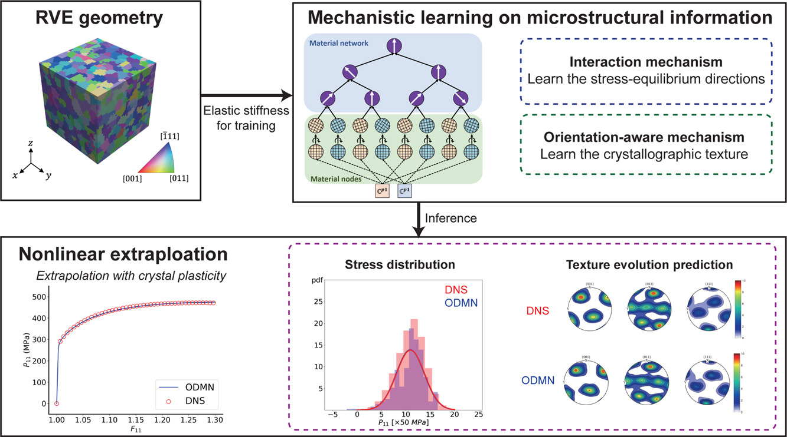
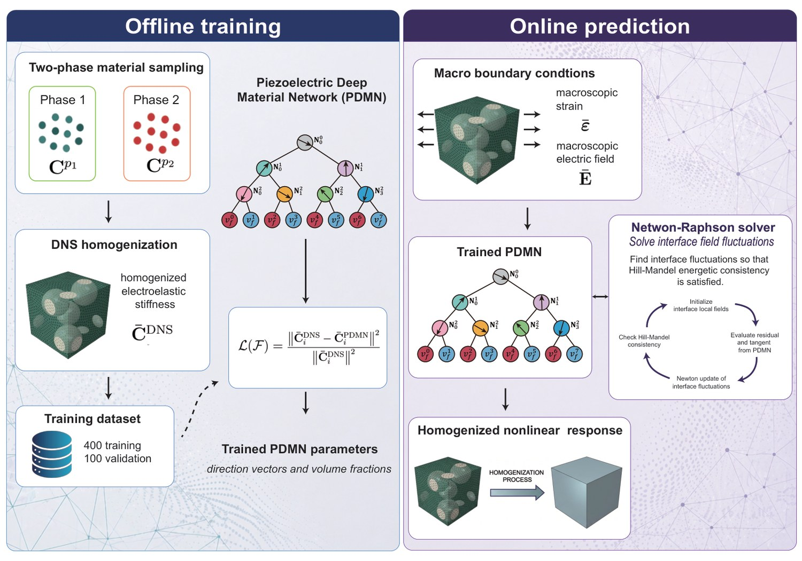
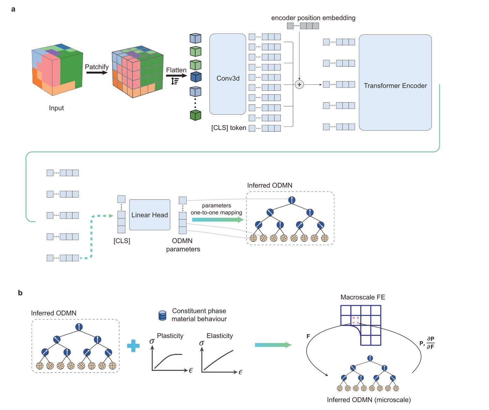
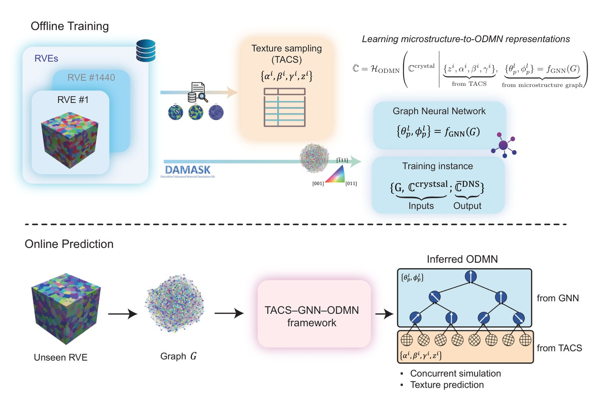
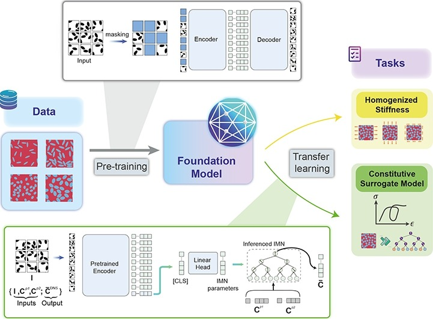
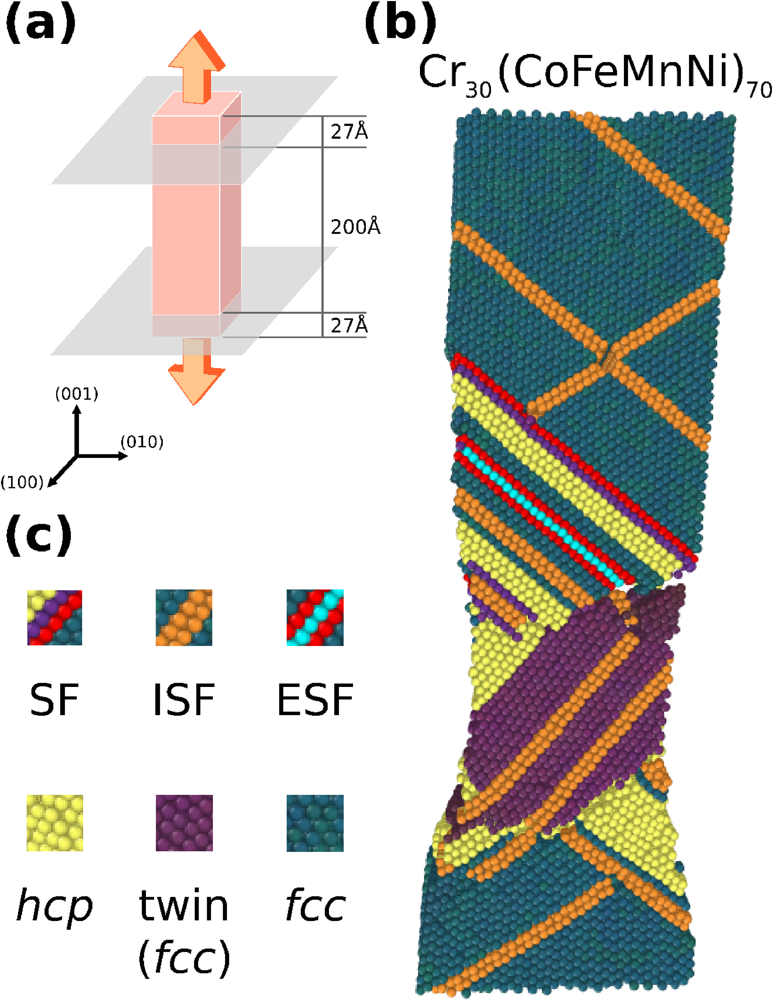
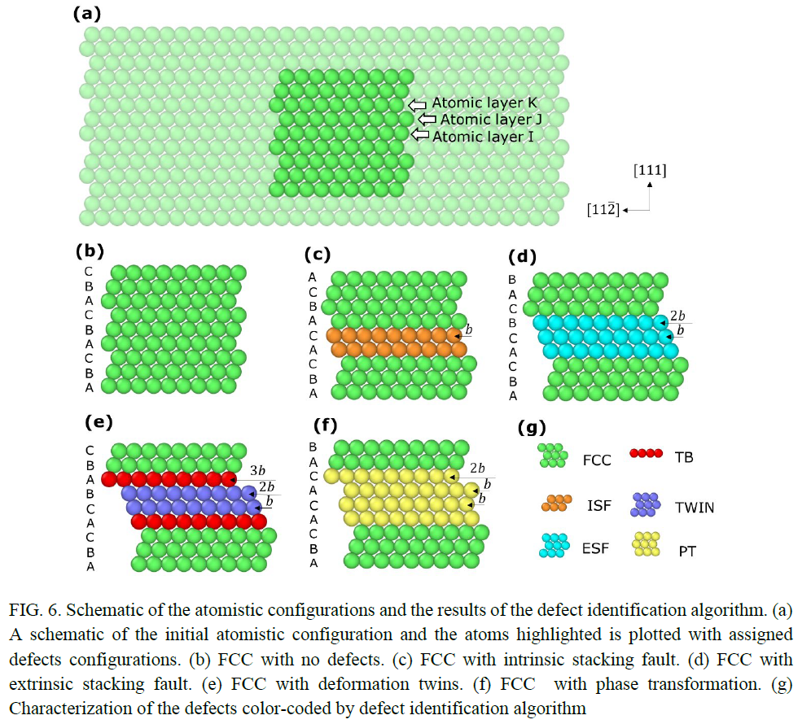

Intro
I am a Postdoctoral Researcher in the AI for Engineering Applications division,
Department of Civil Engineering, National Taiwan University, where I completed my Ph.D. in 2026.
My research develops AI-driven multiscale modeling and physics-based simulation
that link microstructure, material behavior, and macroscopic performance across scales.
- Deep material networks & physics-informed surrogate modeling
- Crystal plasticity, multiscale homogenization & texture evolution
- Foundation models & transfer learning for material microstructures
- Multiphysics coupling (mechanical, thermal, electromechanical)
- Molecular dynamics of high-entropy alloys (LAMMPS); scientific computing in Python / C++ / Fortran
- Licensed Professional Engineer (Civil Engineering)
-
Global Winner – Best Use of Science (1st out of 5,300+ teams),
NASA International Space Apps Challenge 2022
(project link)
Research

Multiscale simulations connect microstructural features to the macroscopic behavior of polycrystalline materials, but their high computational demands limit practicality. Deep material networks (DMNs) are efficient surrogate models, yet they fall short of capturing texture evolution. We propose the orientation-aware interaction-based deep material network (ODMN), which combines an orientation-aware mechanism that learns crystallographic textures with an interaction mechanism grounded in the Hill–Mandel principle that captures stress-equilibrium directions among representative volume element (RVE) subregions. Notably, ODMN requires only linear elastic data for training yet generalizes to complex nonlinear, anisotropic responses, accurately predicting both mechanical response and texture evolution under complex plastic deformation. Published in Computer Methods in Applied Mechanics and Engineering (CMAME), 2025.

We extend deep material networks to multiphysics homogenization with the Piezoelectric Deep Material Network (PDMN), a surrogate for the nonlinear electro-mechanical response of piezoelectric composites. Each building block encodes the coupled electroelastic behavior of a phase, and interface field fluctuations are resolved by a Newton–Raphson solver that enforces Hill–Mandel energetic consistency. Trained only on homogenized linear electroelastic stiffness, PDMN predicts the coupled mechanical–electrical response — including viscous stress relaxation — of PVDF–LiNbO3 composites at below 2% error with roughly a 10,000× speedup over full-field simulation. Preprint (arXiv:2606.22566), 2026.

A self-supervised foundation model for polycrystalline microstructures. A 3D Vision Transformer is pretrained by masked reconstruction of voxelized RVEs to learn transferable, physically meaningful microstructure representations. A lightweight linear head then maps these representations directly to ODMN parameters, so a fully parameterized surrogate can be inferred for previously unseen textures — enabling efficient nonlinear multiscale prediction without retraining a separate network for each microstructure. Preprint (arXiv:2512.06770), under review.

A parametric multiscale surrogate that generalizes deep material networks across polycrystalline textures. Texture-Adaptive Clustering and Sampling (TACS) samples the crystallographic-texture parameters of an ODMN, while a Graph Neural Network infers the morphology parameters tied to micromechanical equilibrium. By combining texture information with a graph representation of the microstructure, the framework constructs complete ODMNs for unseen RVEs — enabling concurrent two-scale simulation and texture prediction without retraining the ODMN itself. Preprint (arXiv:2512.06779), under review.

We present the Material Masked Autoencoder (MMAE), a self-supervised Vision Transformer pretrained on a large corpus of short-fiber composite images via masked image reconstruction. The pretrained MMAE learns latent representations that capture essential microstructural features and are broadly transferable across tasks. We demonstrate two key applications: (i) predicting homogenized stiffness components through fine-tuning on limited data, and (ii) inferring physically interpretable parameters by coupling MMAE with an interaction-based material network (IMN), thereby enabling extrapolation of nonlinear stress–strain responses. Published in Materials & Design, 2025.

We used molecular dynamics simulations to investigate the relationship between mechanical properties and deformation mechanisms in CoCrFeMnNi alloys of different compositions. According to deformation-twinning activity, the mechanisms under tensile loading fall into three categories: easy-shear (ES), inter-locks (IL), and bulk hcp transformation (BH). Compositions with ES tended to rupture early due to short, fragmented twins; the IL pattern promoted movement of interlocking stacking faults along twin boundaries, prolonging deformation; and BH further increased ductility, as the hcp transformation absorbed and dissipated stacking faults. Published in Materials Chemistry and Physics, 2021.
Defect identification algorithm for FCC crystal structures

We developed defect identification algorithms to study CoCrFeMnNi high-entropy-alloy single-crystal deformation in molecular dynamics simulation. According to defect evolution, the deformation divides into two stages: dislocation slip in stage I, and dislocation slip together with twinning contributing to work hardening in stage II. The algorithms discern the most common defects in face-centered cubic crystals, allowing MD simulation to bridge the relationship between defect evolution and material properties.
Activity
In this project, we propose a machine learning pipeline to predict the probability of a solar-storm event. We divide the challenge into three subproblems: (1) map DSCOVR's magnetic data to Wind's magnetic data, (2) transform magnetic data to solar-proton data, and (3) predict the storm-occurrence probability based on the proton data.
Freediving

I am a freediving enthusiast. I find the underwater world fascinating and enjoy exploring the beauty of marine life. Freediving offers a sense of tranquility and connection with nature that is unmatched.
Photography & Travel

I enjoy capturing moments during my travels and exploring new places through photography. Photography is a way to document and share my adventures, and it helps me see the world from different perspectives. Traveling lets me experience diverse cultures, meet new people, and gain a deeper understanding of the world — whether it's the bustling streets of a city or the serene landscapes of nature.